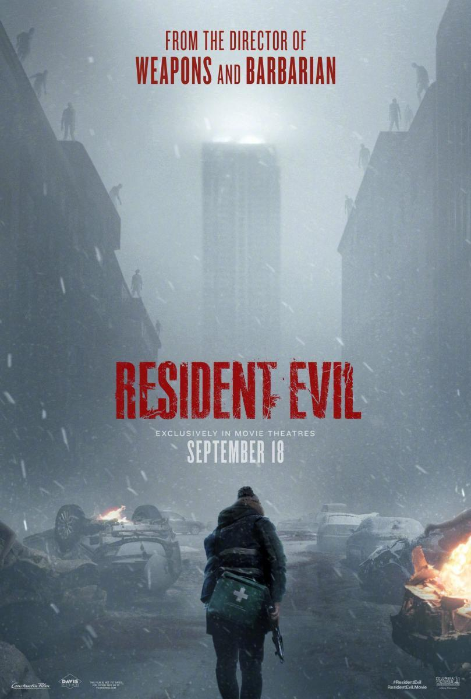

Pel·lícula
Pel·lícula
El Senyor dels Anells: La Germandat de l'Anell
Frodo rep l'Anell Únic i, amb una Germandat de nou companys, emprèn el viatge per destruir-lo al Mont del Destí.
IMDb 8,9 ↗Cartellera
Tres pel·lícules i una sèrie. Entra a cada fitxa per veure la sinopsi completa, la fitxa tècnica i l'enllaç a IMDb.
Pel·lícula
Frodo rep l'Anell Únic i, amb una Germandat de nou companys, emprèn el viatge per destruir-lo al Mont del Destí.
IMDb 8,9 ↗ Pel·lícula
Pel·lícula
Per guanyar la seva llibertat, John Wick haurà d'enfrontar-se a l'Alta Taula en un duel al capdamunt del món.
IMDb 7,7 ↗
Pel·lículaRaccoon City està en quarantena i una sola figura travessa la ciutat en runes buscant la sortida.
IMDb n/d ↗ Sèrie
Sèrie
A Gilead, una teocràcia que ha abolit els drets de les dones, June lluita per sobreviure i recuperar la seva filla.
IMDb 8,4 ↗